Two everyday tenses that sound similar but mean totally different things. We build them one at a time, then put them side by side and drill the difference on real kids' stories. Three focused spelling blocks along the way. Check right in the block or press «Check all» at the foot.
📇 Below are eight question cards about YOU. Answer each one in full sentences. Use Present Simple — because we are talking about habits, routines and facts that are true in general (not just right now).Q: What do you do every morning? · A: I get up, I eat breakfast and I go to school.
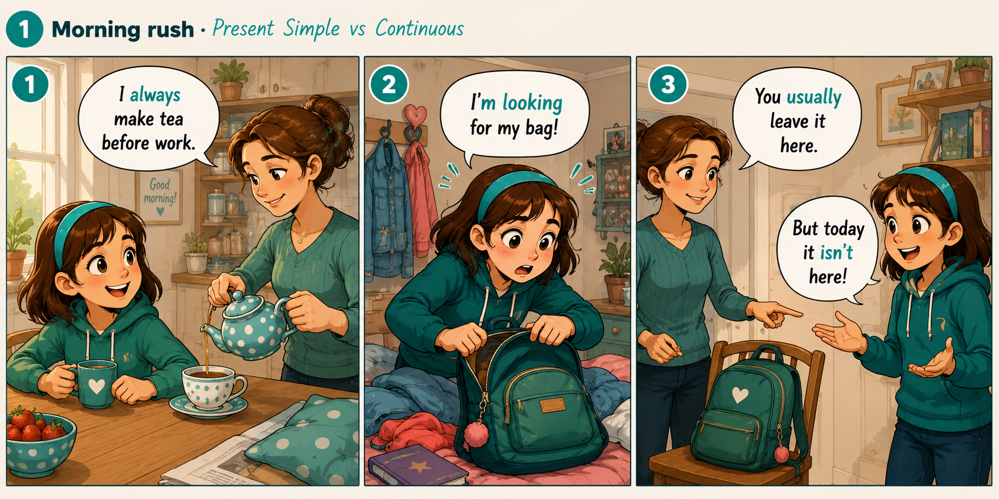
Tap a card, then say your answer out loud. Try to speak in Present Simple: I work / like / have / go / study / play.
Q1
What is one thing outsiders usually get wrong about your city or your country?
→ Most people think that ___, but actually ___.
Q2
At what time of the day are you the sharpest — and when do you completely switch off?
→ In the morning I usually ___. By the evening I ___. My brain never really ___ before ___.
Q3
What is one activity you never get tired of, no matter how many times you do it?
→ I never get tired of ___. Every time I ___, I feel ___.
Q4
Which subject at school seems useless to you right now, and how do you handle it anyway?
→ Honestly, I don't really see the point of ___. I still ___ because ___. My trick is ___.
Q5
Name one thing you have learned just by watching your parents work or live their lives.
→ From watching my mum / dad, I know that ___. That is why I ___ or I don't ___.
Q6
What little trick do you use to make yourself start boring homework?
→ When I don't feel like ___, I usually ___. It works because ___. If that fails, I ___.
Q7
What tiny ritual does your family repeat that outsiders would find strange?
→ Every ___ my family ___. It probably looks weird because ___, but for us it means ___.
Q8
Is there a small superstition or lucky habit you follow every day, even though you know it's silly?
→ I never / always ___. I know it doesn't really ___, but somehow I feel ___ when I do it.
👀 Notice: nearly every answer starts with «I ___» + a base verb. That's Present Simple.
02
Signal words · Present Simple
A2 → B1 · Murphy 5
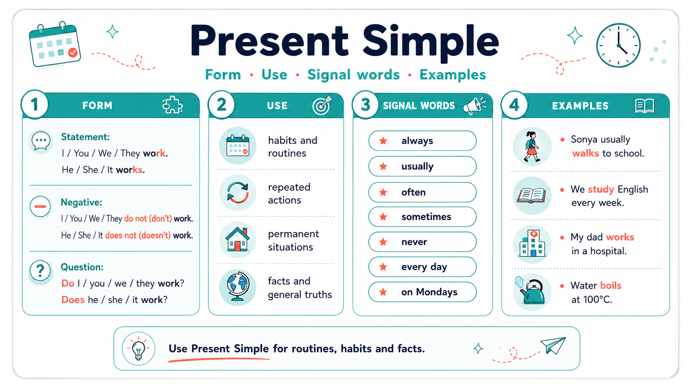
🎯 Present Simple is used far beyond «my daily routine». At B1 level it covers:
🔹 habits & routines — repeated actions (I get up at seven every day)
🔹 general truths & facts — things always true (Water boils at 100°C · Bears hibernate in winter)
🔹 permanent situations — long-term states (She works in a hospital · They live in Perm)
🔹 timetables & schedules — even for future! (The bus leaves at 6 p.m. tomorrow)
🔹 opinions & feelings with state verbs (I think so · She hates horror films · We believe him)
🔹 characteristic behaviour (My dad always talks too loudly)
Compare: I drink coffee every morning (habit) · Coffee contains caffeine (fact) · The train arrives at 9 tomorrow (schedule).
Adverb
Approx. frequency
Position in sentence
always
100%
Before the main verb, but AFTER «to be». 🔸 I always read before bed. 🔸 She is always late.
Longer phrases (every day, once a week, from time to time) usually go at the end of the sentence: 🔸 I go swimming once a week. 🔸 We visit granny every Sunday.
almost always · nearly always
~95%
usually · normally · generally
~90%
frequently · regularly
~80%
often
~70%
sometimes
~40–50%
occasionally
~30%
from time to time
~20%
rarely · seldom
~10%
hardly ever · almost never
~5%
never
0%
ever(in questions & negatives)
«at any time?»
🔸 Do you ever eat sushi? · I don't ever eat spicy food.
📍 Position of frequency adverbs — the full picture
Rule 1 · Between subject and main verb (most common):
· She often visits her grandmother.
· We rarely go to the cinema on weekdays.
· I always brush my teeth before bed.
Rule 2 · AFTER the verb «to be» (am / is / are / was / were):
· She is always late. · I am never hungry in the morning.
· Note the contrast: I often feel tired ↔ I am often tired.
Rule 3 · Between auxiliary and main verb (do, does, have, has, can, will, must…):
· Do you usually take the bus?
· I don't often eat sweets.
· She has never been to Paris. (with Present Perfect)
· You should always lock the door.
Rule 4 · Longer phrases go at the START or END of the sentence:
· Every day I read for half an hour. / I read for half an hour every day.
· Once a week we visit our cousins. / We visit our cousins once a week.
· From time to time I forget my keys. / I forget my keys from time to time.
Rule 5 · «Sometimes» and «usually» can also go at the START of a sentence for emphasis:
· Sometimes I feel like giving up. (more dramatic)
· Usually, my dad picks me up from school.
Rule 6 · «Never / rarely / seldom / hardly ever» are ALREADY negative — don't use another «not»!
✅ I never eat fish. · ❌ I don't never eat fish.
✅ She hardly ever watches TV. · ❌ She doesn't hardly ever watch TV.
Frequency words
alwaysusuallyoftensometimesrarelynever
Regular time phrases
every dayevery weekevery morningevery summeron Mondaysat weekendsonce a weektwice a monthin the morning
Write the signal word from the list into each sentence:
1.I brush my teeth before bed — 100% of the time.
2.My dad eats fish — he really doesn't like it.
3.My English class is at 4 p.m.
4.Sonya practises the piano for twenty minutes.
5.We have dinner at seven — but sometimes later.
6.My little brother plays chess with me — but not very often.
7.My grandparents visit us .
8.I get up later — about 9 a.m.
9.My best friend comes to my house after school.
10.I drink orange juice .
🎁 One more thing you MUST know for Present Simple
1. Third-person -s / -es / -ies · the complete map
Every time the subject is he / she / it / a name / a singular noun, the verb changes its form. This is the single most-often-forgotten rule of Present Simple. Below are ALL the sub-rules.
Rule 1.1 · Most verbs · just add -s
· work → works · read → reads · play → plays · sleep → sleeps · love → loves · speak → speaks · drink → drinks · swim → swims
Rule 1.2 · Verbs ending in -s / -ss / -sh / -ch / -x / -zz · add -es (extra syllable!)
· miss → misses · pass → passes · push → pushes · wash → washes · watch → watches · teach → teaches · fix → fixes · mix → mixes · buzz → buzzes 💡 Why -es and not just -s? An «-s» sound cannot follow another hissing sound directly. To make it pronounceable, we insert an extra vowel /ɪ/. So «watches» has TWO syllables: /ˈwɒtʃ-ɪz/, not one.
Rule 1.4 · Vowel + y · just add -s (no change to y!)
· play → plays · buy → buys · enjoy → enjoys · say → says (pronounced /sez/!) · pay → pays · stay → stays · destroy → destroys · employ → employs 🎯 Trap: NEVER write «plaies», «buies», «enjoies».
Rule 1.5 · Verbs ending in -o · add -es
· do → does · go → goes · echo → echoes · veto → vetoes · tomato/potato (nouns plural) → tomatoes
Rule 1.6 · Irregular forms · MEMORISE
· have → has · be → is (I am · you are · he/she/it is) · do → does (also in questions: Does she like...?)
Rule 1.7 · Modal verbs NEVER take -s
❌ she cans, ❌ he musts, ❌ it wills — NEVER!
✅ she can, ✅ he must, ✅ it will, ✅ she should, ✅ he might, ✅ it could
🎯 Pronunciation of the -s ending (3 sounds)
This is not just spelling — the ending is pronounced differently depending on the previous sound:
· after voiceless sounds (p, k, f, t, th unvoiced) → /s/ → stops, walks, laughs, hits, months
· after voiced sounds (b, d, g, v, z, m, n, l, r, all vowels) → /z/ → rubs, reads, sings, lives, plays, grows
· after hissing/buzzing sounds (s, z, sh, ch, x, ss) → /ɪz/ — an EXTRA SYLLABLE → watches, washes, fixes, misses, judges
🎯 Common student mistakes (avoid these!)
❌ «She go to school.» → ✅ She goes to school. (forgot the -es on go)
❌ «My dad watch TV.» → ✅ My dad watches TV. (need -es after -ch)
❌ «She studys hard.» → ✅ She studies hard. (consonant + y → ies)
❌ «He don't like fish.» → ✅ He doesn't like fish. (3rd person negative)
❌ «Does she likes music?» → ✅ Does she like music? (no -s after «does»)
❌ «She cans swim.» → ✅ She can swim. (no -s on modals)
💡 More practice: full spelling map + drills are in Block 3.
2. State verbs · they DO NOT take -ing
Some verbs describe a state, not an action. Even when we talk about right now, they stay in Present Simple:
· Feelings: like, love, hate, want, need, prefer
· Thinking: know, believe, understand, remember, forget, mean
· Senses: see, hear, smell, taste, feel
· Possession: have (=own), belong, own, contain
· Being: be, seem, appear, exist
✅ I know the answer. · ❌ I am knowing the answer.
✅ She loves chocolate. · ❌ She is loving chocolate. 💡 Full stative-verbs table with traps (have, see, think — two meanings each) is in Block 8.
Now build your OWN complex sentences
Complete each sentence with two clauses — the frequency word gives you the tense. Use words like because, when, if, although, so, while, after, before to link the two parts.
Example: «I always brush my teeth before I go to bed, because my dentist says it's important.»
1.I alwaysbecause .
2.My best friend usuallywhen .
3.On weekends my family oftenalthough .
4.My little brother neverif .
5.Every morning I before I .
6.My mother sometimeswhile she .
7.On Sundays we after we .
8.My grandparents rarely, so .
📝 These are free-writing sentences — no single correct answer. Say them out loud, then write two of your favourites in your notebook.
03
Present Simple · form · find the mistake
A1 · Murphy 5
🟢 I / you / we / they → verb stays in the base form. 🟢 He / she / it → verb gets -s (or -es after -sh, -ch, -x, -o).I work. · She works. · He watches TV. · Sonya goes to school.
Tap the WRONG word in each sentence:
🔤 Third-person -s · the complete spelling map
Rule 1 · Most verbs · just add -s
· work → works · read → reads · play → plays · walk → walks · sleep → sleeps
10.Everything depend on the weather forecast for next weekend.
Right: Everything depends on the weather («everything» is 3rd person singular).
🤔 Now think: which tense is used in all ten of these sentences? Why this one and not another? Which signal words give it away?
04
Present Simple · negatives & questions · from a B1 text
B1 · Murphy 6–7
🔴 Negative: don't (I/you/we/they) · doesn't (he/she/it) + base verb (no -s!). 🔵 Question: Do / Does + subject + base verb?She doesn't speak French. · Does he live in Moscow?
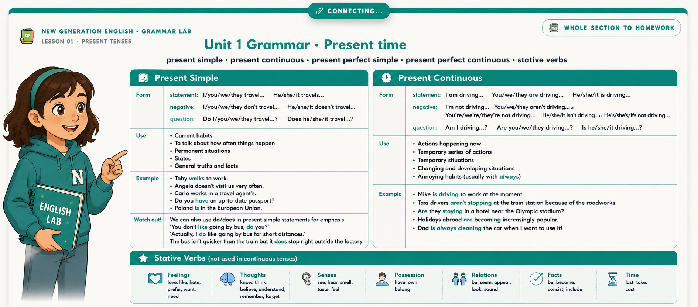
Meet Olivia · a teenager from Devon, England
Olivia is fifteen years old, and her daily life follows a fairly strict rhythm. She gets up at half past six every morning and cycles to school along the coastal path — a route she claims she never gets tired of. Her mother works as a nurse at the local hospital and often does night shifts, so Olivia usually prepares breakfast for herself and her younger brother Noah.
At school, Olivia specialises in art and biology. She particularly enjoys biology because her teacher regularly organises field trips to the nearby cliffs and rock pools. However, she doesn't like maths, and she doesn't take physics at all this year. In her spare time, Olivia doesn't watch television much — instead, she volunteers at a small animal shelter twice a week, where she looks after abandoned puppies and kittens. Her friends sometimes tease her about it, but she doesn't mind at all.
Using the text above, put the verb in the correct form (positive, negative, or question):
1.Olivia up at half past six every morning. (get)
2.She physics this year. (not take)
3. to school? (Olivia / cycle?)
4.In her spare time she television much. (not watch)
5.What kind of shifts at the hospital? (her mother / do?)
6.At the shelter, Olivia abandoned puppies and kittens. (look after)
7. her about volunteering? (her friends / tease?)
8.Olivia when her friends make fun of her. (not mind)
9. to the same school as Olivia? (Noah / go?)
10.According to Olivia, cyclists tired of coastal routes. (not get)
05
Five kids talk about themselves · guess where they live
A2 · Reading + PS
📖 Five children from five different countries tell you about their life in Present Simple. Read each story, then choose the country. Look for clues — food, sport, language, weather, holidays!
👦 Lucas, 11
«Good morning! I live near a huge football stadium in the biggest city in South America. My family and I speak Portuguese — most people around here do. Football is more than a sport for us; it is almost a religion. Every afternoon after school my friends and I train on the beach until the sun goes down. My mother cooks delicious traditional dishes such as rice and black beans with grilled meat. Every February the whole country celebrates a huge street festival called Carnival — everybody dances samba in colourful costumes for a whole week.»
Where does Lucas live?
Portuguese + samba + Carnival + beach football → Brazil.
👧 Yuki, 10
«Hello! My city is enormous and incredibly clean — the streets look almost polished. I live in a small flat on the fourteenth floor with my parents and my grandmother. Every morning I take a super-fast train to school; locally we call it the shinkansen. Twice a week I do karate at a martial-arts school near my home. My favourite meal is sushi with green tea, and my mother often prepares miso soup or rice bowls for dinner. Every April our whole neighbourhood celebrates a beautiful festival for the cherry blossoms, when the pink petals fill every park in the city.»
«G'day! I live in a small wooden house right next to the beach. Both of my parents work as wildlife rangers in a huge national park — they look after koalas, kangaroos and even the occasional wombat! At school we naturally speak English, but with a strong accent that surprises foreign visitors. Every December we celebrate Christmas at the beach with a barbecue instead of a snowman, because December is the middle of our summer. I surf almost every weekend with my dad and my little sister, and once a year we drive across the Great Ocean Road for a family holiday.»
Where does Ethan live?
Koalas + kangaroos + Christmas at the beach + surfing → Australia.
👧 Chloé, 11
«Hello from a city that everybody instantly recognises by its famous iron tower! Every single morning my father cycles to the local bakery to buy warm baguettes and buttery croissants — that is our classic breakfast. My school is only a short walk away, and my favourite subject is art history because we regularly visit real museums instead of studying from a textbook. On Sundays my family often has a long picnic in a beautiful public park, and every summer we drive down south to visit my grandmother in Provence, where the fields of lavender stretch to the horizon.»
Where does Chloé live?
Baguettes + croissants + Eiffel Tower + Provence → France.
👦 Mikhail, 12
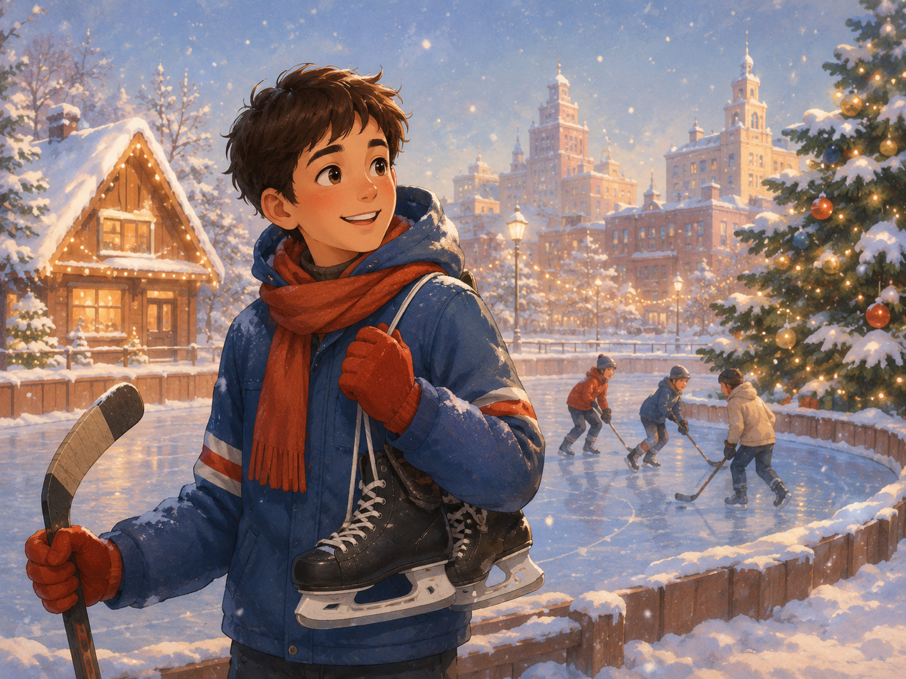
«Hello! I live in the largest country in the world, and it gets seriously cold: winter here lasts almost five months and covers everything in thick snow. My favourite sport is ice hockey, which I play three times a week at the local rink. My mother cooks the best beetroot soup — we call it borscht — and she serves it with fresh sour cream and dark rye bread. Every New Year's Eve my whole family decorates a big fir tree, and at midnight we all watch a special TV address before opening presents together. Both of my parents work in a big publishing company that produces school textbooks.»
Where does Mikhail live?
largest country + snow-heavy winter + borscht + hockey + New Year fir tree → Russia.
06
have · I've got · listening + Present Simple
A2 · Murphy 9
have / has ↔ have got / has got — same meaning, different form. 🇺🇸 Do you have? · I don't have. 🇬🇧 Have you got? · I haven't got.I have a bike. = I've got a bike. · Does she have a sister? = Has she got a sister?
🎧 EMMA & SOPHIE · at Emma's house · ~90 sec · 🇬🇧 British English
Listen and count how many have got / has got / do you have sentences you hear.
Show transcript
Emma: Hi Sophie! Come in, come in!
Sophie: Hey Emma, thanks. Wow, your room is so nice.
Emma: Thanks. Have you got a room this big at home?
Sophie: No, I haven't. I share a room with my little sister. It's tiny.
Emma: Really? How many brothers and sisters have you got?
Sophie: Just one sister, Lily. She is seven. And you? Do you have any siblings?
Emma: Yes, I've got one older brother, Sam. He is fifteen. He never lets me into his room!
Sophie: Ha ha, typical big brother! Oh, is this your dog?
Emma: Yes! His name is Biscuit. He is three years old. Do you have any pets at home?
Sophie: I've got a cat — her name is Muffin. She is black and white and very lazy.
Emma: I love cats, but Mum says we can't have one because Biscuit gets jealous.
Sophie: Poor Biscuit. But he is so cute! Has he got any brothers or sisters?
Emma: No, he hasn't. He was the only puppy in the litter.
Sophie: What about fish? Have you got any goldfish? My grandma has three!
Emma: No, we don't have any fish. Just Biscuit.
Sophie: Oh, what time is dinner? I'm getting hungry!
Emma: Mum is making pasta right now. Do you like pasta?
Sophie: I love pasta! Especially with cheese on top.
Emma: Perfect. Come on, let's go down to the kitchen.
🎬 TTSMP3 script (SSML) · click, copy, paste into ttsmp3.com
[speaker:Emma] Hi Sophie! Come in, come in!
[speaker:Amy] Hey Emma, thanks. <break time="400ms"/> Wow, your room is so <emphasis level="moderate">nice</emphasis>.
[speaker:Emma] Thanks. <emphasis level="moderate">Have you got</emphasis> a room this big at home?
[speaker:Amy] No, I <emphasis level="strong">haven't</emphasis>. I share a room with my little sister. It's tiny.
[speaker:Emma] Really? How many brothers and sisters <emphasis level="moderate">have you got</emphasis>?
[speaker:Amy] Just one sister — Lily. She is seven. <break time="500ms"/> And you? <emphasis level="moderate">Do you have</emphasis> any siblings?
[speaker:Emma] Yes, I<emphasis level="moderate">'ve got</emphasis> one older brother, Sam. He is fifteen. <break time="400ms"/> He <emphasis level="strong">never</emphasis> lets me into his room!
[speaker:Amy] <prosody rate="medium">Ha ha, typical big brother!</prosody> <break time="500ms"/> Oh, is this your dog?
[speaker:Emma] Yes! His name is Biscuit. He is three years old. <emphasis level="moderate">Do you have</emphasis> any pets at home?
[speaker:Amy] I<emphasis level="moderate">'ve got</emphasis> a cat — her name is Muffin. She is black and white, and very lazy.
[speaker:Emma] I love cats. But Mum says we can't have one because Biscuit gets jealous.
[speaker:Amy] Poor Biscuit. <break time="400ms"/> But he is so cute! <emphasis level="moderate">Has he got</emphasis> any brothers or sisters?
[speaker:Emma] No, he <emphasis level="moderate">hasn't</emphasis>. He was the only puppy in the litter.
[speaker:Amy] What about fish? <emphasis level="moderate">Have you got</emphasis> any goldfish? My grandma <emphasis level="moderate">has</emphasis> three!
[speaker:Emma] No, we <emphasis level="moderate">don't have</emphasis> any fish. Just Biscuit.
[speaker:Amy] <break time="600ms"/> Oh — what time is dinner? I'm getting hungry!
[speaker:Emma] Mum is making pasta right now. <emphasis level="moderate">Do you like</emphasis> pasta?
[speaker:Amy] I <emphasis level="strong">love</emphasis> pasta! Especially with cheese on top.
[speaker:Emma] Perfect. <break time="400ms"/> Come on, let's go down to the kitchen.
Emma → voice «British English / Emma». Sophie → voice «British English / Amy». TTSMP3 auto-switches voices at each [speaker:X] marker. Download the MP3 → save it as audio/emma-sophie-dialogue.mp3 → wire it to the ▶ button.
Task A · fill in have / has / haven't / hasn't (from what you heard)
1.Emma a nice big bedroom in her house.
2.Sophie her own bedroom — she shares one with her little sister.
3.Emma an older brother called Sam.
4.Sophie a black-and-white cat called Muffin.
5.Biscuit any brothers or sisters — he was the only puppy in the litter.
6.Emma's family any goldfish at home — just Biscuit.
Task B · fill in the missing details from the dialogue
7.Sophie's little sister is called .
8.Sophie's sister is years old.
9.Emma's older brother Sam is years old.
10.Emma's dog is called .
11.Biscuit is years old.
12.Sophie's cat is called .
13.Sophie describes her cat as very .
14.Sophie's grandma has goldfish.
15.For dinner Emma's mum is making .
16.Sophie loves pasta with on top.
Task C · True / False / Not stated
17.Sophie has never been to Emma's house before.
18.Emma also has a small cat at home.
19.Emma's mum thinks Biscuit would be jealous of a new pet.
20.Sophie's cat Muffin is older than Emma's dog Biscuit.
21.Emma's brother Sam does not let her into his bedroom.
22.Emma's family has two fish tanks in the living room.
🤔 Think: when the girls say «I have got a brother» and «Sophie has three goldfish» — is it the same tense? What is the difference in form? And why do they choose have got instead of do you have?
07
Present Continuous · full theory
A2 → B1 · Murphy 3–4, 8
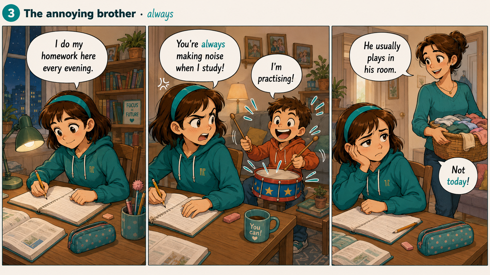
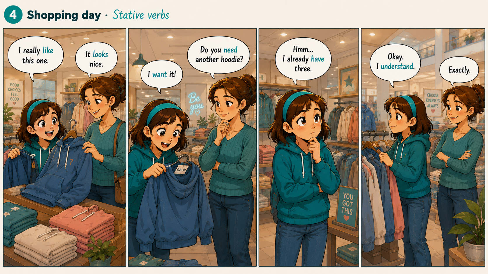
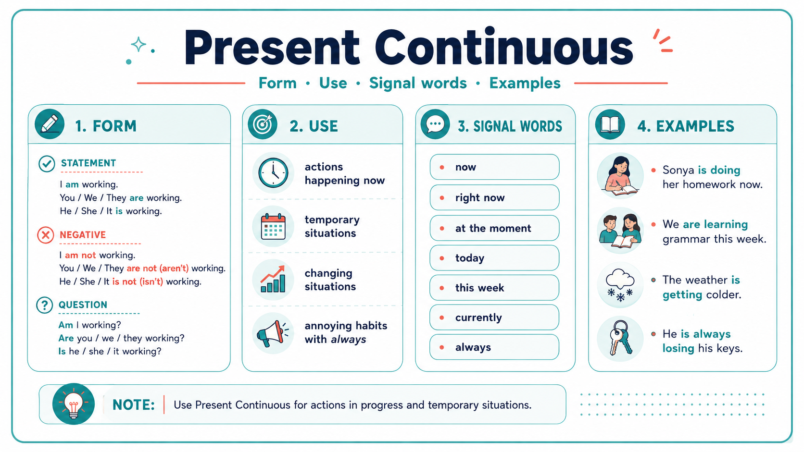
Present Continuous describes actions or situations that are in progress at a specific moment — usually the moment of speaking, but not always. The action started before now, is still happening, and will finish soon or in the near future.
She is reading a book right now. · The kettle is boiling. · They are having lunch at the moment.
Form
Positive
Negative
Question
I
I am reading. · I'm reading.
I'm not reading.
Am I reading?
he / she / it
She is reading. · She's reading.
She isn't reading.
Is she reading?
you / we / they
They are reading. · They're reading.
They aren't reading.
Are they reading?
Wh-questions
Wh-word + am/is/are + subject + verb-ING? · e.g. What are you doing? · Why is he crying? · Where are they going?
🎯 Five main uses of Present Continuous (from A2 to B1):
1. Action happening AT THE MOMENT OF SPEAKING.
· Look! It is snowing outside.
· Please be quiet — the baby is sleeping.
· «Where's Emma?» «She's having a shower.»
2. Temporary situations — happening «around now», but not literally in this second.
· Sonya is studying hard for her English test this week.
· My mother is staying with my grandparents these days.
· I'm reading a really interesting book at the moment. (I'm not reading it right now — I put it down — but I haven't finished it.)
3. Changing or developing situations — often with verbs like get, become, grow, change, rise, fall, improve.
· The weather is getting colder every week.
· Your English is improving quickly.
· Prices are rising again.
4. Annoying / repeated behaviour — with always, constantly, forever (expresses irritation).
· My little brother is always taking my things without asking! 😤
· Grandma is constantly forgetting her glasses.
5. Definite future arrangements — plans already fixed with a specific time.
· We are flying to Turkey on Saturday. (tickets already booked)
· I'm meeting Anna at 4 p.m. tomorrow. (we agreed yesterday)
🚦 Signal words · Present Continuous
nowright nowat the momentat this momenttodaythis week / monththese daysnowadayscurrentlyLook!Listen!Wait!Watch!always / constantly (irritation)
🔤 -ING spelling rules — a complete list
Rule 1 · Most verbs · just add -ing
· work → working · read → reading · play → playing · study → studying · fix → fixing
Rule 2 · Verb ends in silent -e · drop the -e, then add -ing
· write → writing · make → making · dance → dancing · come → coming · leave → leaving Exception: «be» → being, «see» → seeing (double e stays).
Rule 3 · One-syllable verb ending in vowel + consonant · double the last consonant, then -ing
· sit → sitting · run → running · swim → swimming · get → getting · stop → stopping · plan → planning But NOT if the verb ends in -w, -x, -y: snow → snowing, mix → mixing, play → playing.
Rule 4 · Verb ends in -ie · change to -ying
· lie → lying · die → dying · tie → tying
Rule 5 · Two-syllable verbs · double consonant ONLY if last syllable is stressed
· beGIN → beginning ✓ (last syllable stressed) · OPen → opening ✗ (first syllable stressed) · preFER → preferring ✓
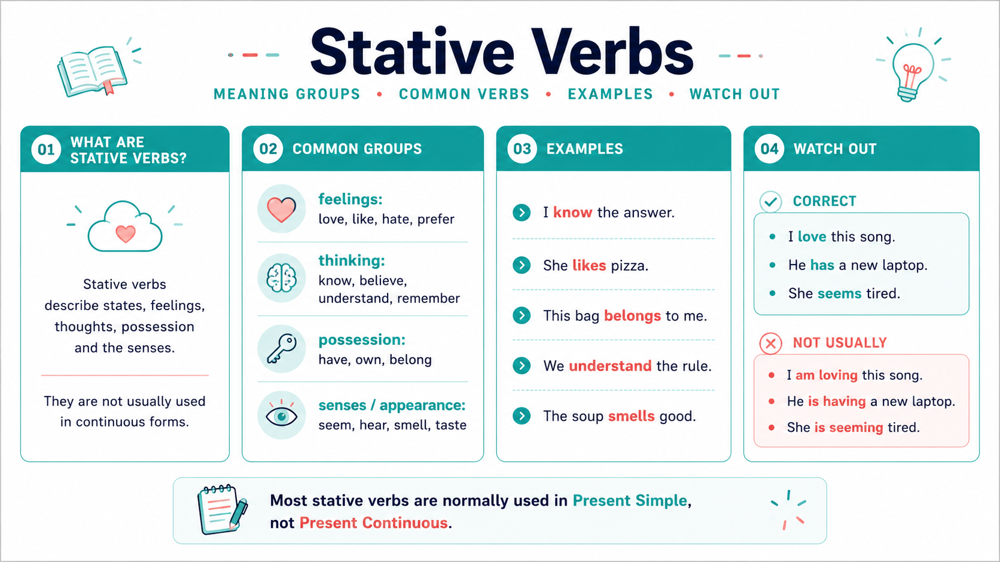
⛔ State verbs — DO NOT use -ING
Some verbs describe states (feelings, knowledge, senses, ownership), not actions. They stay in Present Simple even when we talk about the current moment.
🔸 Feelings / emotions: like, love, hate, want, need, prefer
🔸 Thinking / opinion: know, believe, understand, remember, forget, think (= believe), mean
🔸 Senses: see, hear, smell, taste, feel
🔸 Possession: have (= own), belong, own, possess
🔸 Being: be, seem, appear, exist
Compare:
✅ I love chocolate. · ❌ I am loving chocolate.
✅ She knows the answer. · ❌ She is knowing the answer.
✅ Do you understand? · ❌ Are you understanding?
✅ I have two brothers. · ❌ I am having two brothers.(but «I am having breakfast» = action, OK!)
Put the verb in Present Continuous:
1.I a message right now. (write)
2.Look! The cat on the sofa. (sleep)
3.My parents TV in the living room at the moment. (watch)
4.It outside — take an umbrella! (rain)
5.Listen! Somebody on the stairs. (run — double N!)
6.I at my desk right now. (sit — double T!)
7.What at this moment? (you / do)
8.The dog under the table. (lie → -ying)
9.You can turn off the radio — I to it. (not / listen)
10.Look! The boys a big snowman in the yard. (make → drop -e)
08
Present Simple vs Present Continuous · the difference
A2 · Murphy 8
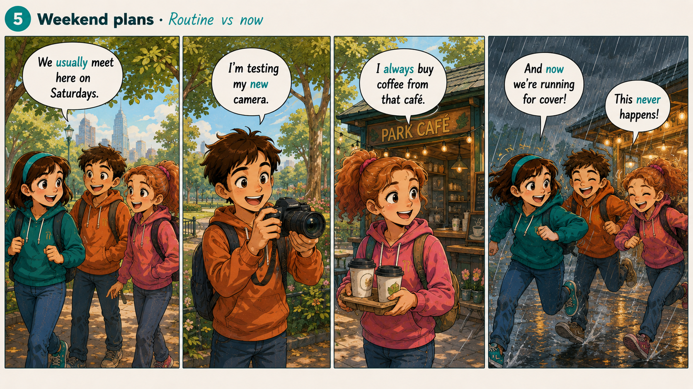
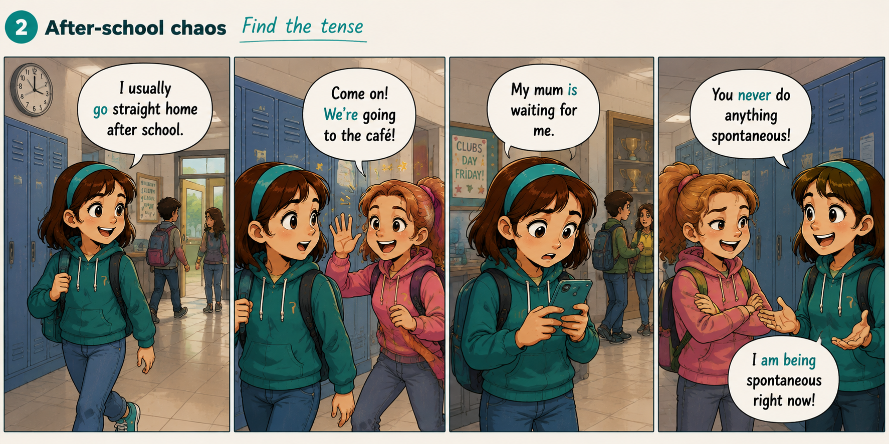
🎯 This is the heart of the lesson. Read the table, then do five drills that force you to notice the difference. When you see the signal word, you know which tense to use.
🟢 Present Simple
🌀 Present Continuous
When?
habit · routine · fact · always true
right NOW · at this moment · a temporary action
Form
V / V+s (he/she/it)
am / is / are + V-ing
Negative
don't / doesn't + V
am / is / are + not + V-ing
Question
Do / Does + subject + V?
Am / Is / Are + subject + V-ing?
Signal words
always · usually · often · sometimes · never · every day · on Mondays · at weekends
now · right now · at the moment · today · Look! · Listen!
Example
She drinks tea every morning.
Look! She is drinking tea right now.
Drill 1 · Sort the sentences into 2 baskets
Read each sentence, then tap 🟢 (Present Simple) or 🌀 (Present Continuous). Look at the signal words!
1.I usually walk to school.
2.Look! Sonya is talking to the teacher.
3.The baby is sleeping at the moment.
4.My dad always drinks coffee in the morning.
5.Listen! The birds are singing outside.
6.On Sundays we visit my grandmother.
7.Why are you crying?
8.Sonya doesn't like early mornings.
9.My cat sleeps twelve hours every day.
10.It is raining right now, so I'm staying inside.
Drill 2 · Choose the correct form
Look at the signal word first, then pick the form.
1.I a very interesting book at the moment.
2.My dad usually coffee in the morning.
3.Listen! Somebody the piano next door.
4.I TV very often.
5.What right now?
6.Sonya to school every weekday.
7.Excuse me, English?
8.Look outside! It .
Drill 3 · Mixed cloze · Sonya's day
Read the paragraph. Signal words → tense choice.
Every morning I
up at half past seven and I
breakfast with my family. Right now, however, it is Sunday and I
at my desk in my pyjamas. Outside it
,
which is unusual — it usually
much in August. My little brother
cartoons in the living room at the moment. He usually
cartoons on Sunday mornings — it's his little ritual. Mum
pancakes right now, and dad
the newspaper on the sofa.
Drill 4 · Spot the mistake
Every sentence uses the WRONG tense. Tap the word that must change form.
1.I am liking chocolate very much.
Right: I like chocolate very much. (like = fact, not action → Present Simple)
2.Listen! Sonya listens to music right now.
Right: Sonya is listening to music right now. (right now → PC)
3.I usually am going to bed at 10.
Right: I usually go to bed at 10. (usually → PS)
4.Look! It rains outside!
Right: Look! It is raining outside! (Look! → PC)
5.Sonya is knowing the answer.
Right: Sonya knows the answer. (know = state verb, no -ing)
6.What do you doing at the moment?
Right: What are you doing at the moment? (at the moment → PC)
09
🔤 Spelling 01 · numbers · days · months
A1
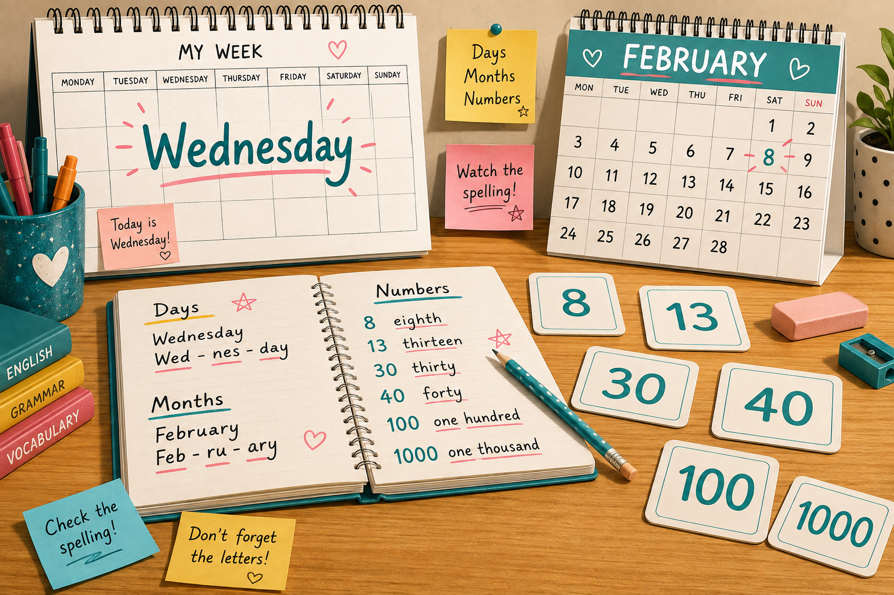
Some easy-sounding words are tricky to write. Watch out for silent letters (Wednesday, February), the -teen / -ty difference (thirteen ≠ thirty), and doubled letters (Tuesday, hundred).Wednesday · February · eighth · thirteenth · forty (NOT «fourty»)
Fill in the missing letters — carefully!
1.Wedn__day → day 3 of the week
2.Thur__ay → day 4
3.Sat__day → weekend day 1
4.Feb__ary → winter month · silent «r»
5.Sept__er → school starts here
6.Oct__er → Halloween month
7.Number 8 = silent «gh»
8.Number 13 =
9.Number 30 =
10.Number 40 = NOT «fourty»!
11.Number 100 = one
12.Number 1000 = one
10
🔤 Spelling 02 · family · colours · verbs
A1
Everyday words — but with silent letters and confusing endings. -ther / -ster in family words, tricky vowels in colours, and «he / she / it» adds -es to go, do, watch.brother · sister · grandfather · yellow · purple · goes · does · watches
Type the whole correct word:
1.your mum (formal word) =
2.your dad (formal word) =
3.your male sibling =
4.your female sibling =
5.your mum's or dad's mother =
6.your mum's or dad's father =
7.the colour of the sun and of a banana =
8.the colour of a carrot and a pumpkin =
9.the colour of grapes and lavender =
10.the colour between black and white = UK «grey» / US «gray» — both OK
11.He / she / it (go) → to school every day.
12.She (do) → her homework in the evening.
13.My grandma (have) → a garden.
14.He (watch) → a film every Sunday.
11
🔤 Spelling 03 · tricky short words
A2
Kids and even adults often misspell these. Look at the letters carefully!beautiful · favourite · friend · because · usually · together
Tap the WRONG spelling in each sentence:
1.Your dress is really beautifull!
Right: beautiful — one L only.
2.My favorit colour is blue.
Right: favourite (UK) or favorite (US) — with -e.
3.She is my best freind.
Right: friend — «i before e».
4.I like this book becuse it's funny.
Right: because — «be-cause».
5.I usualy get up at 7.
Right: usually — double L.
6.Let's do the homework togeather.
Right: together — no «a» in the middle.
7.I like ice cream alot.
Right: a lot — two words.
8.Wich book do you like?
Right: Which — starts with «wh».
9.A lot of peaple live in Moscow.
Right: people — «peo-ple».
10.My cat allways sleeps in my bed.
Right: always — one L.
12
Reading · Meet Anna
A2
Read the short text, then decide if each statement is true, false, or not stated. Watch the tense — it changes in the last paragraph!
Anna is twelve years old and she lives in a small flat in the centre of Kazan with her mother, her father, and her little brother Vasya. Anna has got a big grey cat called Muffin — she loves him very much. Vasya has got a small brown dog. The cat and the dog don't usually play together, but they are best friends when they sleep.
Every morning Anna gets up at seven o'clock. She has a light breakfast (usually just toast and tea with honey) and then she goes to school by bus. At school her favourite subjects are English and art, and she doesn't really like maths — she says it is too difficult. Anna's mother is a doctor and her father works in a big library.
Right now Anna is sitting in her bedroom. She is doing her English homework about spelling. Muffin is sleeping on her school bag and Vasya is playing a video game in the living room. It is a quiet Sunday evening in Kazan.
Choose True (T), False (F) or Not stated (NS):
1.Anna lives in a flat with her parents and one brother.
2.The cat and the dog play together every day.
3.Anna has toast and tea for breakfast on most days.
4.Anna's little brother Vasya also studies English at school.
5.Anna loves maths lessons at school.
6.Anna's mum works as a doctor.
7.Anna's dad is very tall.
8.Anna is doing her English homework right now.
9.The cat is sleeping in the living room right now.
10.It is Sunday evening in the story.
13
🎤 Your turn · speak & spell
A2
Two short tasks — one speaking, one writing. No pressure — this is where new words become yours.
1. Tell me about YOUR normal day (about 90 seconds).
Use Present Simple for habits (I get up, I go, I eat) and Present Continuous to describe what you're doing right now.
«My name is ___. I am ___ years old. I live in ___. Every morning I get up at ___. Then I ___. At school I ___. In the afternoon I usually ___. In the evening my family and I ___. Right now I am ___.»
2. Spelling challenge · write these words from memory:
1. the day after Tuesday · 2. the month before March · 3. the number 40 · 4. «beautiful» · 5. «friend» · 6. «because» · 7. «usually» · 8. «together» · 9. «Wednesday» · 10. «favourite»
New Generation English · Grammar Workbook
Homework · Lesson 02 · Present Simple vs Present Continuous
📝 Workbook · homework drills
Five short drills in the style of a real B1 textbook: Circle the correct form, Rewrite correctly, Complete with the right form, Choose the correct answer, and Find the extra word. All exercises focus on Present Simple ↔ Present Continuous (perfects come later).
🕐 30–40 min✍️ 5 exercises🎯 A2 → B1
W1
Exercise A · circle the correct form
B1
Read the whole sentence first, then pick the tense that matches the signal word. Watch out for state verbs (they don't take -ing).
1.Elizabeth to bed at around eleven o'clock.
2.Dan on the other phone right now.
3.We any meat at the moment as we're both on a diet.
4. increasingly safe?
5.My mum me every weekend without fail.
6.How much ?
7. up with excuses for not having done your homework. It's so annoying!
8. out much during the week.
9.No, the train at Cirencester on Saturdays.
10.My mum part in ice-skating competitions almost every weekend.
W2
Exercise B · rewrite correctly · tap the wrong word
B1
Each sentence uses the wrong tense or form. Tap the word that must change. Common trap: state verbs should stay in Present Simple, and habits shouldn't be in Continuous.
1.My dad is often getting up late on Saturday mornings.
Right: My dad often gets up late (habit → PS).
2.Are you speaking any other languages apart from English?
Right: Do you speak any other languages (general ability → PS).
3.I think about buying a new phone at the moment.
Right: I am thinking about buying (mental action in progress → PC).
4.Carlo is never eating Chinese food.
Right: Carlo never eats Chinese food (habit → PS).
5.Needs Melanie any help painting her new flat?
Right: Does Melanie need any help (question form of PS with «need» — state verb).
6.My little brother is knowing the answer already.
Right: My little brother knows the answer already (know is a state verb → PS).
7.Look! The dog drink water from my glass!
Right: Look! The dog is drinking water (Look! → PC).
8.Sorry, I am not understanding what you mean.
Right: Sorry, I don't understand (understand is a state verb → PS).
W3
Exercise C · complete with the correct form
B1
Put the verb in the brackets into Present Simple or Present Continuous. Pay attention to the signal words in each sentence.
1.I to get in touch with Jenny all morning but I can't find her anywhere. (try)
2.Poor Tracy! She that essay right now and she isn't done yet! (write)
3.I the chance to get any exercise — I'm just too busy these days. (not get)
4. anyone famous at your grandparents' café? (you / ever / meet)
5.My brother usually his homework before dinner. (not finish)
6.What at this exact moment? (you / do)
7. any help painting her new flat? (Melanie / need)
8.My dad TV in the evening — he prefers reading books. (rarely / watch)
9.The weather colder every week — autumn is coming. (get)
10.I really you can pass the exam if you keep studying. (believe — state verb!)
W4
Exercise D · choose the correct answer
B1
Four options each — but only one matches the signal words and the meaning. Read carefully!
1. Ian _____ a shower at the moment, so could you call back in about half an hour?
«at the moment» → Present Continuous.
2. Dan _____ in the living room while we redecorate his bedroom this week.
Temporary situation this week → Present Continuous.
3. Eric, _____ hockey competitively or just for fun?
«usually» → habit → Present Simple.
4. Unfortunately, Simone _____ a day off very often.
5. Actually, I _____ a cup of tea first thing every morning, but then I switch to coffee.
«every morning» → habit → PS. «do» adds emphasis / contradicts what someone said.
6. Sorry, I _____ what you mean. Can you say it again?
«understand» — state verb → always PS.
7. My little brother _____ his dirty socks on the kitchen floor. It drives me crazy!
«always + Present Continuous» → annoying habit.
8._____ German at home with his family?
General ability / habit → PS. 3rd person → Does + base form.
W5
Exercise E · find the extra word in each line
B1
Every line has one word that shouldn't be there. Tap the extra word. Often it's an extra to be or -ing where you don't need it.
1.I am usually go swimming twice a week at the local pool.
Right: I usually go swimming — no «am» needed (habit → PS).
2.My mother is works as a nurse in a big city hospital.
Right: My mother works as a nurse — no «is» needed (PS).
3.Every Sunday my family cook-ing a big lunch together.
Right: Every Sunday my family cook — habit needs the base form.
4.Listen! The birds outside are do singing beautifully today.
Right: The birds outside are singing — no «do» needed.
5.I am know the answer to that question, thank you!
Right: I know the answer — «know» is a state verb, no «am».
6.My best friend is being tall and has curly brown hair.
Right: My best friend is tall — description = state, no «being».
7.Right now the teacher does is explaining something new.
Right: Right now the teacher is explaining — no «does» needed.
8.My grandparents are live in a small village near Vologda.
Right: My grandparents live in a small village — no «are» needed.
9.Look! It be is raining again — take an umbrella!
Right: It is raining — no «be» needed.
10.Excuse me, do you am speak English by any chance?
Right: Do you speak English — no «am» needed.
W6
Exercise F · complete using the words in the box
B1
Use each word from the box only once. Read the sentence, decide the tense, then choose the signal word that fits.
Word box (use each word once)
alwaysusuallyoftensometimesrarelyneverevery dayat the momentright nowthis week
1.My father drinks his coffee black — no sugar, no milk, ever.
2.I eat fast food — my mum thinks it's really bad for me.
3.We visit our grandparents on our way home from school.
4.Please be quiet — my little brother is sleeping .
5.I finish my homework before dinner, but tonight I'm too tired.
6.I can't come out — I'm helping my mum in the garden .
7.My best friend and I go to the cinema together on Fridays.
8.My dad gets the chance to relax at weekends — he's always busy with something.
9.My mother is staying with my grandparents .
10.My grandmother forgets where she puts her glasses.
W7
Exercise G · complete the text with the correct form of the verb
B1
Read the whole text before you start. Some verbs are Present Simple (habits, facts, state verbs) and some are Present Continuous (right now, temporary).
A day in the life of a young scientist
Every morning, marine biologist Anna Reeve
up at half past five and
to the small harbour where her research boat is waiting. On a normal day, she and her team
water samples from six different bays and
them for pollution.
This month, however, Anna
on a special project. She and her team
a group of dolphins that
in the same bay all year round. Anna
the dolphins are trying to tell us something important about the health of the ocean.
Right now, Anna
a young dolphin through her binoculars. She
to disturb them. «I
this job,» she says quietly. «Every day
something new.»
W8
Exercise H · match to make sentences (state vs action)
B1
Some verbs (think, have, look, see, be) have two meanings: a state meaning (→ Present Simple) and an action meaning (→ Present Continuous). Match each half-sentence to its natural ending.
Beginning
1. I think
2. I'm thinking
3. Phil looks
4. Phil is looking
5. Claire has
6. Claire is having
7. Andy is
8. Andy is being
Ending
for his glasses. Have you seen them?
you're absolutely right about that.
a haircut at the moment.
not old enough to drive a car.
of buying a new phone this week.
darker hair than her older sister.
like he needs a good holiday.
very annoying at the moment!
W9
Exercise I · write ONE word in each gap
B1
Read the dialogue and put one word in each gap. Some are auxiliaries (do, does, don't, am, is, are), some are pronouns, some are signal words.
1.« you speak English at home with your parents?»
2.«No, we speak English at home — only Russian.»
3.« are you reading right now?»
4.«I reading a fantasy novel. It's about dragons.»
5.« your little brother go to the same school as you?»
6.«No, he — he's still in nursery.»
7.«What do you do at the weekend?»
8.«On Saturdays we visit our grandma — every single week.»
9.«Look outside! The birds making so much noise this morning!»
10.«It raining again. I hate this weather.»
11.«My cat comes when I call her — she's too proud!»
12.« you enjoying your new school?»
W10
Exercise J · rephrase · use the given word
B1
Complete each second sentence so it means the same as the first. Use between two and five words. Don't change the given word.
1.What's the price of the tickets? MUCH , Jimmy?
2.Are these your trainers? BELONG you?
3.Sasha isn't keen on team sports at all. LIKE Sasha team sports at all.
4.It hardly ever rains in this desert. RAIN It in this desert.
5.Sharon is in the shower at the moment. SHOWER Sharon at the moment.
6.Paul enjoys surprises apart from on his birthday. DOES Paul surprises — just not on his birthday!
7.My brother constantly loses his phone — it drives me mad. ALWAYS My brother his phone — it drives me mad.
8.Your question is not clear to me. UNDERSTAND I you mean.
NEW GENERATION ENGLISH · Lesson 02 · 25 Aug 2026 · Sonya Simarzina · Present Simple vs Present Continuous + Spelling